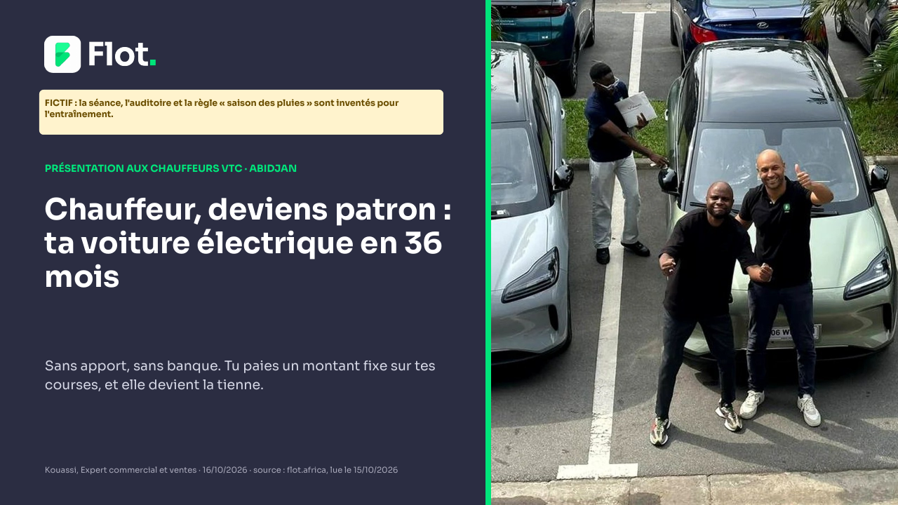
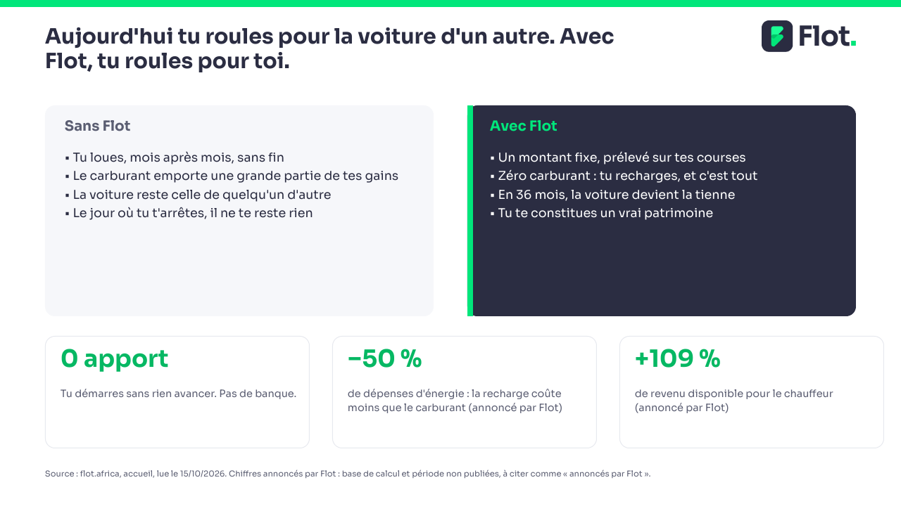
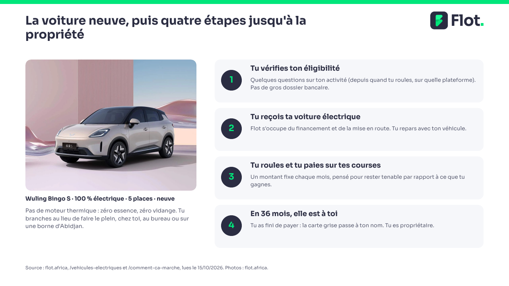
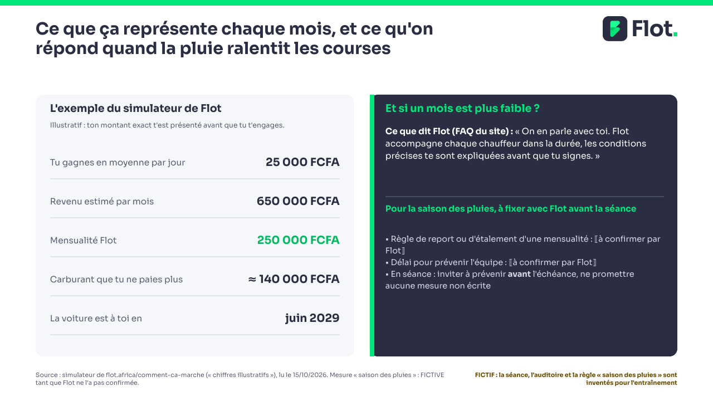
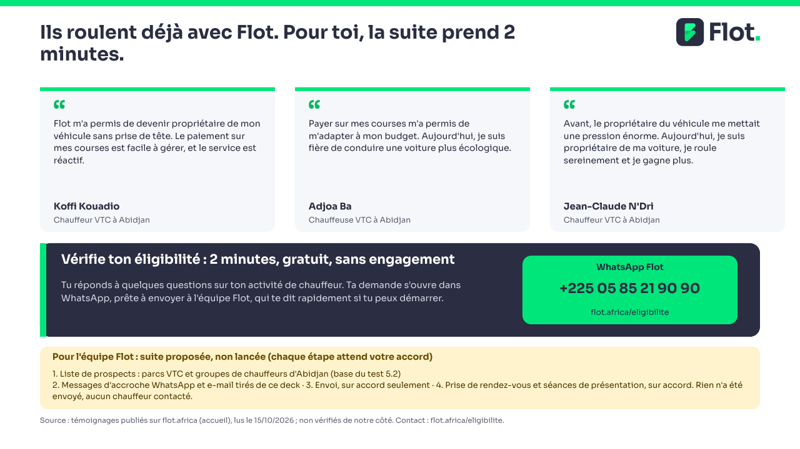

Notes de l'orateur, diapositive 1
Ouverture (1 minute). Se présenter, dire que la séance dure 20 minutes dont 8 de questions. FICTIF : l'auditoire et le lieu de la séance sont inventés ; adapter au parc ou au groupe réellement visé. Rien n'est envoyé ni publié.

Notes de l'orateur, diapositive 2
Message : le métier ne change pas, la propriété change. Lire les deux colonnes à voix haute, puis les trois chiffres. Dire « annoncé par Flot » pour −50 % et +109 % : le site ne donne ni période ni méthode. Ne pas les transformer en promesse de revenu.

Notes de l'orateur, diapositive 3
Montrer la photo : « c'est la flotte Flot telle qu'elle roule aujourd'hui » (formulation du site). Détails pratiques de recharge (autonomie, temps de charge, points) : le site dit qu'ils sont présentés à l'inscription, donc ne pas les chiffrer en séance ⟦à renseigner par Flot⟧.

Notes de l'orateur, diapositive 4
Le simulateur du site est illustratif : le dire. Ne pas en tirer un « il te restera 400 000 F » : recharge, entretien, assurance et commission des plateformes ne sont pas chiffrés par le site. Saison des pluies : hypothèse de travail, les courses baissent certains mois ; aucune statistique publique trouvée, donc aucun chiffre. La règle de report est ⟦à confirmer par Flot⟧ ; sans réponse écrite de Flot, ne rien promettre.

Notes de l'orateur, diapositive 5
Clôture : une seule demande, vérifier l'éligibilité. Les logos affichés sur le site (Yango, Société Générale, Ascoma, Orange Bank, etc.) ne valent pas autorisation de les citer : ne pas les nommer comme partenaires sans accord de Flot. Suite proposée, non lancée : liste de prospects (parcs et groupes de chauffeurs, test 5.2), messages d'accroche, envoi (sur accord de Flot), prise de rendez-vous. Rien n'a été envoyé, aucun chauffeur ni parc contacté.